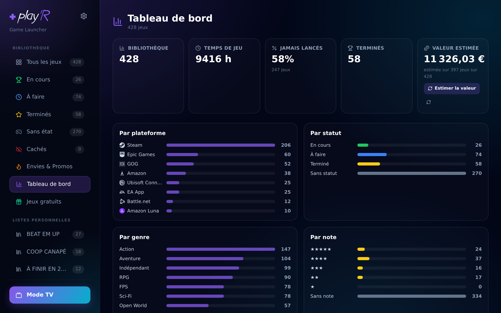

Instalacja & konfiguracja playR
Wszystko wyjaśnione krok po kroku — nawet jeśli dopiero zaczynasz.
Zasada działania
playR = serwer (który hostuje bibliotekę) + klienci (komputery, które się z nim łączą).
- Serwer działa na komputerze z Windows albo gdzie indziej przez Dockera (NAS, CasaOS, Proxmox…).
- Klient (aplikacja Windows) sam go znajduje — na tym komputerze i w sieci.
- Ty podłączasz swoje konta (Steam, Epic…) i synchronizujesz.
Potrzebujesz tylko jednego serwera w swojej sieci; wszystkie komputery klienckie wskazują właśnie na niego.
Serwer — na komputerze z Windows
Nic nie musisz robić: instalator instaluje serwer razem z aplikacją. Przy pierwszym uruchomieniu playR sam go startuje i sam się z nim łączy.
- Małe okno playR Serveur otwiera się i pokazuje adres, który trzeba podać pozostałym komputerom.
- Zamknięcie okna zwija je do zasobnika systemowego (obok zegara) — serwer działa dalej.
- Aby go zatrzymać: kliknij ikonę prawym przyciskiem → Zatrzymaj.
Serwer — na CasaOS
- App Store → Zainstaluj własną aplikację.
- Kliknij ikonę Importuj, w prawym górnym rogu okna.
- Skopiuj zawartość tego pliku, wklej ją, a potem Wyślij.
- Kliknij Zainstaluj.
- W oknie, które się otworzy: Zainstaluj, a potem Otwórz.
Adres do podania klientom: http://[IP-du-CasaOS]:3000.
Serwer — na Synology / NAS
Docker jest dostępny tylko na zgodnych modelach Synology (głównie Intel/x86 — serie „+” oraz średnia i wyższa półka). W wielu modelach ARM / z niższej półki aplikacja w ogóle się nie pojawia w Centrum pakietów, niezależnie od wersji DSM. W takim razie hostuj serwer gdzie indziej: komputer z aplikacją Windows „Serveur”, mini-PC, Raspberry Pi…
Jak sprawdzić: lista modeli zgodnych z Container Manager.
Przypadek Synology ARM (np. DS218 — układ RTD1296): Synology NIE udostępnia Dockera / Container Manager dla tych modeli w Centrum pakietów. Istnieje rozwiązanie społecznościowe (skrypt 007revad „ContainerManager for all armv8”, DSM 7.2+), który instaluje Container Manager na tych modelach — nieoficjalny, na własne ryzyko.
⚠️ Poza tym obraz playR jest na razie tylko w wersji amd64; obsługa arm64 (NAS-y ARM, Raspberry Pi) jest w przygotowaniu. Do tego czasu na tych maszynach najprościej hostować serwer gdzie indziej (mini-PC, CasaOS albo aplikacja Windows „Serveur”).
Nazwa aplikacji zależy od wersji DSM:
- DSM 7.2 / 7.3 → « Container Manager »
- DSM 7.0 / 7.1 → « Docker »
Jeśli aplikacja jest dostępna w Centrum pakietów, zainstaluj ją, otwórz, a potem:
- Projekt → Utwórz.
- Nazwa:
playr· ścieżka: folder (np./docker/playr). - Źródło: Utwórz docker-compose.yml i wklej:
services:
playr:
image: ghcr.io/ixelia-fr/playr:latest
container_name: playr
restart: unless-stopped
ports:
- "3000:3000"
environment:
- NODE_ENV=production
- DATA_PATH=/app/data
volumes:
- /volume1/docker/playr/data:/app/data- Dalej → Zakończ. Container Manager pobiera obraz i uruchamia kontener.
- Adres dla klientów:
http://[IP-du-Synology]:3000.
Serwer — na Proxmox
Dwie opcje:
- Jeden kontener LXC z zainstalowanym Dockerem, a potem polecenie ogólne dla Dockera.
- Mała VM (Debian/Ubuntu) z Dockerem, tak samo.
Serwer — Docker (metoda uniwersalna)
Serwer to obraz Dockera: działa na dowolnym hoście Dockera (zwykły serwer Linux, mini-PC, Raspberry Pi Intel/amd64…). To podstawa wszystkich pozostałych przypadków.
mkdir -p ./playr/data
docker run -d --name playr --restart unless-stopped \
-p 3000:3000 \
-e DATA_PATH=/app/data \
-v $(pwd)/playr/data:/app/data \
ghcr.io/ixelia-fr/playr:latestAlbo plik docker-compose.yml i wtedy docker compose up -d.
Serwer — Portainer, Unraid, TrueNAS, OMV…
Wszystkie te platformy uruchamiają Docker → to ten sam plik compose wszędzie. Wskazówki dla poszczególnych narzędzi:
- Portainer / Dockge: Stacks → Add stack → wklej plik compose → Deploy.
- Unraid: wtyczka Compose Manager (albo szablon Dockera) — obraz
ghcr.io/ixelia-fr/playr:latest, port 3000, wolumen na/app/data. - TrueNAS SCALE: Apps → Custom App / Docker Compose — ten sam obraz, ten sam port, ten sam wolumen.
- OpenMediaVault: wtyczka compose (omv-extras) → wklej plik compose.
W każdym przypadku: obraz ghcr.io/ixelia-fr/playr:latest, port 3000, trwały wolumen na /app/data. Adres dla klientów: http://[IP-de-la-machine]:3000.
Autoryzacja urządzenia (kod parowania)
Twój serwer nie otwiera biblioteki przed byle kim: każde urządzenie trzeba raz autoryzować kodem. Nikt inny w twojej sieci nie odczyta twoich kopii zapasowych ani nie będzie sterować playR.
- Serwer na tym komputerze (zwykła instalacja Windows): nic nie musisz robić. playR sam znajduje kod na dysku i autoryzuje się, o nic nie pytając.
- Serwer gdzie indziej (NAS, Docker, inny komputer): playR pokazuje ekran Kod autoryzacji i czeka na kod w postaci
ABCD-EFGH-JKMN. Tylko raz na urządzenie — potem już go pamięta.
Gdzie znaleźć kod
- Serwer Windows: w oknie playR Serveur, sekcja Kod autoryzacji, z przyciskiem Kopiuj kod.
- Serwer Docker / NAS: tam nie ma żadnego ekranu, kod jest zapisywany w dziennikach przy starcie:
Poszukaj liniidocker compose logs playrplayR — code d'autorisation : XXXX-XXXX-XXXX.
Aktualizacja serwera
Serwer Windows
Nic nie trzeba robić. Aktualizuje się sam, razem z aplikacją.
Serwer Docker (NAS, CasaOS, Proxmox…)
Automatycznie (domyślnie w zestawie). Plik docker-compose.yml zawiera usługę playr-updater sprawdzającą co 30 minut i automatycznie aktualizującą playR. Nic nie trzeba konfigurować ani wpisywać. Dotyczy to wyłącznie kontenera playR.
Ręcznie (opcja awaryjna). Powiadomienie (🔔 w prawym górnym rogu) uprzedzi cię, gdy pojawi się nowa wersja. Jeśli wolisz zrobić to sam albo zainstalowałeś sam obraz (bez pliku compose), uruchom to na maszynie hosta — polecenie samo pyta Dockera o ścieżkę, nie musisz być we właściwym folderze:
cd "$(docker inspect playr --format '{{index .Config.Labels "com.docker.compose.project.working_dir"}}')" && docker compose pull && docker compose up -dInstalacja klienta
Pobierz instalator i uruchom go. Przy pierwszym uruchomieniu playR szuka twojej biblioteki — na tym komputerze i w sieci — i prosi o potwierdzenie. Serwer możesz zmienić w każdej chwili (menu ⚙ → Zmień serwer).
Podłączanie kont
Każdy serwer startuje pusty: podłączasz swoje własne konta w sekcji ⚙ Ustawienia. Nic nie jest współdzielone.
W przypadku większości platform playR po prostu otwiera oficjalne okno logowania: logujesz się u nich, jak zwykle, i gotowe. Żadnych kodów do przepisywania.
| Serwis | Czego potrzebujesz | |
|---|---|---|
| Steam | Login i hasło Steam, potem Steam Guard (razem z rodziną) — albo SteamID i klucz API | Więcej informacji → |
| Epic | Okno logowania Epic | Więcej informacji → |
| GOG | Adres twojego publicznego profilu | Więcej informacji → |
| Amazon | Jeden przycisk (aplikacja Amazon Games musi być zainstalowana na tym komputerze) | Więcej informacji → |
| EA | Okno logowania EA | Więcej informacji → |
| Ubisoft Connect | Okno logowania Ubisoft (razem z uwierzytelnianiem dwuskładnikowym) | Więcej informacji → |
| Battle.net | Okno logowania Battle.net | Więcej informacji → |
| GeForce NOW · Amazon Luna | Przełącznik / poziom twojego abonamentu | Więcej informacji → |
| Okładki & metadane | Nic — to jest w zestawie | Więcej informacji → |
Steam
Dwa sposoby do wyboru:
- Steam Connector (zalecany — obejmuje gry rodzinne): ⚙ Ustawienia → Steam → wpisz swój login i hasło Steam. Steam Guard poprosi potem o potwierdzenie: albo zatwierdzasz jednym gestem w aplikacji Steam Mobile (playR czeka i sam rusza dalej), albo wpisujesz 5-znakowy kod. Logujesz się tylko raz — zapisywany jest token, twoje hasło nie jest przechowywane. Działa nawet z prywatnym profilem Steam.
- Albo SteamID i klucz API (tylko gry, które posiadasz, bez rodziny, a profil musi być publiczny): twój SteamID64 (17 cyfr, np.
7656…— znajdziesz go przez steamid.io) i darmowy klucz na steamcommunity.com/dev/apikey.
Jeśli na tym komputerze używano już kilku kont Steam, playR wykryje je i zaproponuje jednym kliknięciem.
Epic Games
Zwykła metoda — okno logowania
- ⚙ Ustawienia → Epic → przycisk „Zaloguj się w oknie”.
- Otworzy się okno logowania Epic: zaloguj się normalnie.
- I to wszystko — playR sam pobiera autoryzację i zamyka okno. Logujesz się raz, nic nie trzeba kopiować.
Jeśli okno się nie otworzy — kod wpisywany ręcznie
Stara metoda nadal działa i jest dostępna w aplikacji, pod linkiem „Coś nie działa? Wpisz kod ręcznie”:
- Przycisk „Otwórz Epic (pobierz kod)”.
- Zaloguj się do Epic, jeśli trzeba: strona ze zwykłym tekstem zostanie wyświetlona.
- Skopiuj wartość pola
authorizationCode(długi ciąg znaków). - Wklej ją w playR i kliknij Zatwierdź.
Wynik jest w obu przypadkach ten sam: dostęp przechowuje serwer i to on potem sam się resynchronizuje.
GOG
GOG nie ma API logowania: odczytujemy twój profil publiczny.
- Na gog.com ustaw swój profil jako publiczny (Ustawienia profilu → Prywatność).
- Otwórz zakładkę GRY swojego profilu i skopiuj adres URL w postaci
https://www.gog.com/u/PSEUDO/games. - Wklej go w ⚙ Ustawienia → GOG → Synchronizuj.
Amazon Games
Amazon nie udostępnia zwykłego tokena: jego biblioteka jest zaszyfrowana twoją sesją Windows, więc można ją odczytać tylko na twoim komputerze. playR zajmuje się tym sam.
- Zainstaluj aplikację Amazon Games i otwórz ją przynajmniej raz, zalogowany na swoje konto.
- W playR: ⚙ Ustawienia → Amazon → „Pobierz moją bibliotekę Amazon”.
Twoje gry Amazon się pojawią. Trzeba to zrobić z komputera, na którym zainstalowany jest Amazon Games.
EA
- ⚙ Ustawienia → EA → przycisk „Zaloguj się w oknie”.
- Zaloguj się na stronie EA, która się otworzy.
- playR pobiera autoryzację i synchronizuje twoją bibliotekę EA — wszystkie posiadane gry, nie tylko te zainstalowane na tym komputerze.
Zainstalowane gry EA uruchamiasz i instalujesz z playR, tak samo jak pozostałe.
Ubisoft Connect
- ⚙ Ustawienia → Ubisoft → przycisk „Zaloguj się w oknie Ubisoft”.
- Zaloguj się na stronie Ubisoft. Uwierzytelnianie dwuskładnikowe działa: wyświetla je Ubisoft, playR tylko pokazuje jego okno.
playR nigdy nie widzi twojego hasła — przechowywany jest tylko token sesji. Pobrana biblioteka to biblioteka twojego konta, razem z grami niezainstalowanymi.
Battle.net
Dwa różne przyciski, zależnie od tego, czego chcesz:
- „Podłącz moją bibliotekę Blizzard”: otwiera okno logowania Battle.net i pobiera gry, które posiadasz, zainstalowane lub nie.
- „Wykryj zainstalowane gry Blizzard”: tylko sprawdza, co jest zainstalowane na tym komputerze, bez logowania.
Granie w chmurze — GeForce NOW & Amazon Luna
playR potrafi wskazać gry, w które możesz zagrać w streamingu, bez instalowania ich. Wszystko ustawisz w ⚙ Ustawienia → Granie w chmurze.
GeForce NOW
Zwykły przełącznik: „Mam abonament GeForce NOW”. GeForce NOW nie dodaje żadnych gier do twojej biblioteki — oznacza tylko te, które już posiadasz i można w nie zagrać w streamingu.
- Pozycja GeForce NOW pojawia się na pasku bocznym, wraz z liczbą takich gier.
- Na karcie gry: przycisk „Zagraj przez GeForce NOW”. Na komputerze z zainstalowaną aplikacją GeForce NOW gra uruchamia się od razu w niej, a playR wraca na pierwszy plan po zakończeniu sesji.
- W Trybie TV zakładka GeForce NOW pojawia się, gdy tylko jest w niej co pokazać.
Amazon Luna
Tutaj wybierasz swój poziom abonamentu: Bez abonamentu, Amazon Prime albo Premium. W przeciwieństwie do GeForce NOW Luna to prawdziwa platforma: gry wliczone w abonament trafiają do twojej biblioteki, trochę jak udostępnianie rodzinne Steam.
- Amazon Prime daje katalog wliczony w Prime; Premium dodaje gry zarezerwowane dla abonamentu Luna.
- Powrót do Bez abonamentu usuwa gry Luna z biblioteki.
- Przycisk „Zagraj na Lunie” na karcie gry, plus osobna zakładka w Trybie TV.
Okładki & metadane
Nic nie trzeba konfigurować. Okładki, opisy, oceny recenzentów, długości gry i wymagania sprzętowe są w zestawie: playR pobiera je przez własną usługę, korzystając z własnych dostępów do baz IGDB i HowLongToBeat.
Wystarczy uruchomić Uzupełnij brakujące informacje z karty gry albo synchronizację metadanych w sekcji ⚙ Ustawienia.
Tryb TV
Pełnoekranowy interfejs zaprojektowany z myślą o padzie i o oglądaniu z kanapy: duże okładki, karuzele, pełna karta gry, sortowanie i filtry — wszystko bez myszy.
- „W co zagrać dziś wieczorem?” — w menu ☰: playR losuje grę spośród tego, co właśnie oglądasz (bieżąca zakładka i filtry). X uruchamia, A otwiera kartę gry, Y losuje ponownie, B zamyka. Gra niedawno wylosowana nie wypadnie od razu ponownie.
- Wygaszacz ekranu — po kilku minutach bez żadnej akcji playR wyświetla na pełnym ekranie kolejne zrzuty z twoich gier, razem z muzyką. Pierwsze naciśnięcie klawisza lub pada wraca dokładnie tam, gdzie byłeś. Ustawisz to w ⚙ Ustawienia → Wygląd (przełącznik + opóźnienie od 3 do 15 minut); domyślnie włącza się po 5 minutach.
- Wygaszacz nigdy nie włącza się w trakcie gry, podczas odtwarzania wideo ani przy otwartych Ustawieniach.
Lista życzeń & promocje
Twoje listy życzeń Steam i GOG zebrane w jednym miejscu, z cenami porównanymi na Steamie, GOG, Epicu, Kinguinie i w około trzydziestu innych sklepach. Najtańsza oferta jest wyróżniona, a gry, które już masz (albo które są dostępne w twoim udostępnianiu rodzinnym Steam), są oznaczone.
Gra jeszcze niewydana ma plakietkę: Premiera dzisiaj, Premiera jutro, Premiera za N dni, albo data, jeśli do premiery zostało ponad miesiąc. W dniu premiery playR przyśle ci powiadomienie 🔔 — tylko przy grach, na które naprawdę czekałeś, nigdy przy tytule dodanym już po premierze.
Lista życzeń GOG wymaga, żeby twój profil GOG był publiczny, tak samo jak przy bibliotece.
Powiadomienie, gdy gra tanieje
playR może cię powiadomić, gdy tylko gra z twojej listy życzeń przekroczy zadaną zniżkę. Ustawienie znajdziesz w ⚙ Ustawienia → Region i ceny, w sekcji „Alert o promocjach z listy życzeń”: wybierz próg, od którego chcesz dostawać powiadomienia (od -10 % do -75 %, domyślnie -30 %), albo „Wyłączone” — wtedy nic nie dostaniesz. Nie zapomnij kliknąć Zapisz.
Alert pojawia się na dzwonku 🔔: « Nazwa gry ma zniżkę -45 % », wraz z ceną i sklepem, którego dotyczy, oraz linkiem „Zobacz ofertę” otwierającym od razu stronę gry.
Podana cena pochodzi z oferty najbardziej przecenionej, która nie zawsze jest najtańsza w liczbach bezwzględnych. Alerty pojawiają się w zwykłym interfejsie; Tryb TV nie ma dzwonka, choć samo ustawienie jest w nim dostępne.
Darmowe gry do odebrania
Pozycja Darmowe gry na pasku bocznym: playR wypisuje tam gry aktualnie rozdawane za darmo (Epic, GOG i inne sklepy), wraz z datą końca oferty. Dostaniesz też powiadomienie 🔔 za każdym razem, gdy pojawi się nowa oferta.
- Ukrywane są gry, które już posiadasz — nie ma potrzeby ich oglądać.
- Dodatki DLC są oznaczone plakietką, ale pozostają widoczne.
- Przycisk Odbierz otwiera sklep w oknie playR i zachowuje twoją sesję: zaloguj się raz do Epic lub GOG, a kolejne odbiory pójdą już bez ponownego logowania.

Panel statystyk
Pozycja Panel statystyk na pasku bocznym — całościowy obraz tego, co naprawdę posiadasz:
- Pięć liczb: wielkość biblioteki, łączny czas gry, odsetek gier nigdy nieuruchomionych, ukończone gry oraz szacunkowa wartość kolekcji.
- Sześć zestawień: według platformy, statusu, gatunku, oceny, roku premiery, plus twoje najczęściej grane gry.
- Przycisk „Oszacuj wartość” uruchamia obliczenia w tle: playR szuka najlepszej aktualnej ceny każdej gry, we wszystkich sklepach naraz. W tym czasie możesz dalej korzystać z aplikacji; postęp jest widoczny.
Statystyki wyświetlają się natychmiast, bez sieci. Tylko oszacowanie wartości wymaga połączenia.

Zmiana okładki
Niektóre gry mają brzydką, generyczną albo żadną okładkę. Na karcie gry: „Zmień okładkę” → playR pokazuje siatkę grafik z SteamGridDB, wystarczy jedno kliknięcie. „Przywróć domyślną” przywraca oryginalną grafikę.
Jest też masowe uzupełnianie, które szuka okładki dla wszystkich gier bez okładki. Automatycznie uzupełnia tylko te dopasowania, które są pewne; resztę zostawia tobie do ręcznego wyboru.
Twój wybór przetrwa synchronizacje: ponowna synchronizacja platformy nigdy go nie nadpisze.